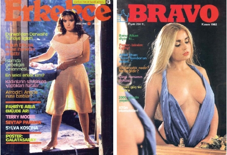

İhtilali yaşamadan önceki gazete ve dergilerle, ihtilal sonrası arasında oldukça büyük farklar vardır. Gazeteci ve yazar-çizer insanların birçoğu hapishanelerde çeşitli suçlar isnat edilerek kimi haklı, kimi haksız yere yatıyorlardı. Dışarıda mesleğini sürdüren insanların sayısı azalmıştı. Haliyle muhalefeti temsil eden bu insanlar içerdeyken de düzgün bir eleştiri ortamı olmuyordu. Oysa gazetecinin görevi bir anlamda da denetleme vazifesini ifa etmektir.
Özal iktidarı geldikten sonra siyasi yasaklar ve yasaklılar birer birer ya yurda dönmeye başlamışlar ya da hapishaneleri boşaltıyorlardı. Dönenler ve özgürlüklerine kavuşanların bir kısmı işlerini bırakmış, bazıları da daha bir bilenmişlerdi.
Daha önce de söylediğim gibi Özal sonrasında algıda değişiklikler meydana gelmişti. Bundan nasibini alan sektörlerin başında medya geliyordu. Siyasi içerikli haberlerin değeri eskisi kadar yoktu. Boşluğu doldurmak için de erotik, spor, üçüncü sayfa haberleri ya da mizaha yönelmişti gazete patronları ve bir takım gazeteciler.
İşte tam da bu yıllarda gazete bayilerini, ön sayfalarının neredeyse tamamını çıplak kadınların süslediği ya da sosyeteden haberlerin yer aldığı bol resimli magazin gazeteleri ve dergiler kaplamaya başlamıştı. Çıplaklık çok sıradan bir şey haline gelmişti. Oysa bir dönem öncesi çeşitli iç çamaşırlarının markalarında çıkan kadınları ya da yine çorap reklamlarında rastladığımız bacakları görüyorduk.
İthal erotik dergiler de raflarda yerini alıyordu sırasıyla. Bir zamanlar da onların poşet içinde satılıp satılmayacağı tartışma konusu olmuştu.

Eski, köklü gazetelerde çok fazla bir değişiklik yoktu aslında. Onların da daha az muhafazakar olanları kadın resimlerini belli sayfalarına koyuyorlardı, ama diğerleri kadar aile olgusunu rahatsız edecek boyutlarda değildi onlar. Ortalamayı o yıllarda yayın hayatına başlayan Sabah gazetesi temsil ediyor gibiydi.
En fazla kullanılan resim ve haberler güney sahillerimizden geliyordu. Üstsüz turistleri eleştiriyormuş gibi çıkan haberlerin neyi anlattıkları çok da anlaşılmıyordu. Göğüs uçlarına veya daha başka yerlere konan ufacık bantlar da bir şey anlatmıyordu. Ya da turistlerin başında dikilip onları röntgenleyen ve maganda diye tabir edilen insanlar da gazeteleri süsledikleri resimlerde sadece manzaraydılar. Esas olansa çıplaklık.
Bu saydıklarıma uygun kalitede yayın yapan dergi gazetelerden bazıları şunlardır: Bulvar, Günaydın (bu gazete o zaman ek olarak değil normal ve hatta çok satan bir gazeteydi,) Erkekçe, Bravo...
Tan: Seksenli yıllarda Boyalı Basın’ın en çok satanlarından biri bu gazetedir. Genelde benzerleri gibi bol sayıda çıplak kadın resimleri yayınlardı. İlginç, konuyla ilgisi olmayan ya da yanlış yönlendirmeler yaparak başlık atarlardı. Her manşetleri bir gariplik kokar, asparagas haberleriyle gündem yaratırlardı. Örnek vermek isterdim, ama buraya alınmayacak kadar kötü ve edepsiz bir tavırları vardı.
Şey: Çıplak kadın resimlerinin en fazla ve en açık şekilde yayınlandığı bir gazetedir. Hiçbir haber değeri taşımamakla beraber, bolca üçüncü sayfa haberleri vardı.
Gır Gır: Bu dergi, kelimenin tam manasıyla bir efsanedir. Müthiş çizer kadrosuyla Türkiye tarihinde bir daha rastlanılmayacak birliktelik kurulmuştur.
Şimdiki mizah dergileri gibi, neredeyse tamamen müstehcenlik ve belden aşağı esprilerle dolu değildi. Oluşan siyasi ortam ve şartların da olgunlaştırdığı, ince zekâ ürünü espriler vardı. Kahramanların her biri döneme damgasını vuran şahsiyetlerdi.
Özal iktidara geldikten sonra dergi daha da neşeli olmuştu sanki. Ara sıra sayıları toplatılır, biz üzülürdük. Derginin TL bazında değeri Turgut kafaları ile ölçülürdü. Yanlış hatırlamıyorsam, derginin ücreti artınca, Turgutlar da artıyordu.
Nice kahramanlar vardı. Bir kısmını hatırlatmakta fayda var. Stero Seyfi, En Kahraman Rıdvan, Eşek Herif, Utanmaz Adam, Deli Ziya, Mamçakoğlu Cüneyt, Muhlis Bey ve Yavlum Mithat...
Fırt: Mizah dergileri içinde, yapısı ve içeriği ile biraz daha farklı sayılırdı. Ebatı diğer dergilerin yarısı kadardı. Bir diğer özelliği de renkli basılıyor olmasıydı.
Diğer dergilere oranla haşarılık daha fazlaydı bu dergide. Özellikle, ön kapağın arkasında bulunan “Yavrunuzun Sayfası” farklıydı. Her sayıda bir çıplak kadın ve onun sağına soluna, üstüne altına, yanına, neresi müsaitse oraya yerleştirilmiş ve o kadın hakkında yorum yapan abidik gubidik tipleriyle dikkat çekiciydi.
Son sayfada, gelmiş geçmiş kahramanların en zontası sayılabilecek “Arap Kadri” vardı. Elinde tespih, altında vücuduna göre çok büyük bir donla ormanda gezer, hava atar, ara sıra Tarzan’la kapışırlardı.